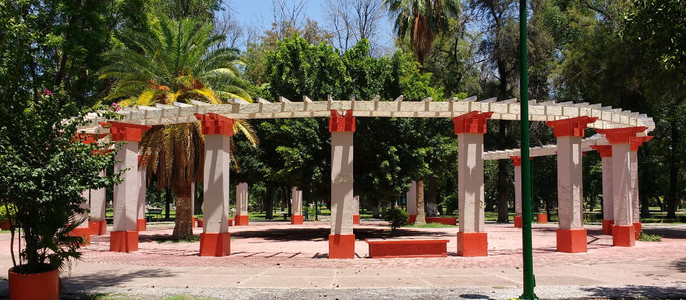
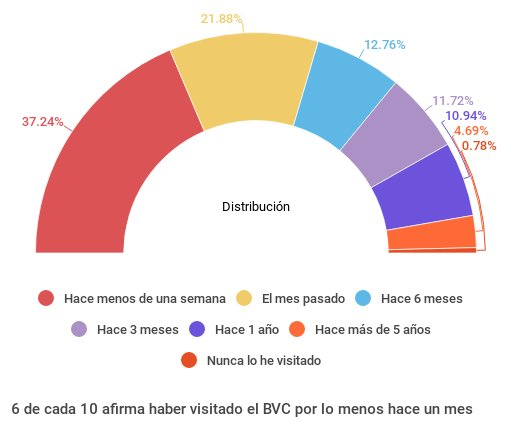
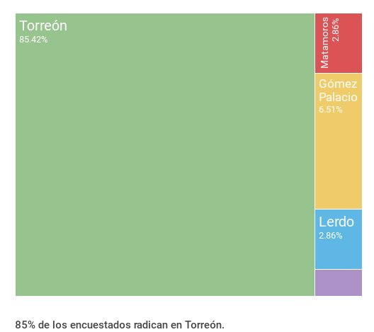

El Bosque Venustiano Carranza (BVC) es el área arbolada más grande con la que cuenta Torreón y La Laguna. Como parte del diagnóstico una encuesta entre usuarios arroja que 9 de cada 10 está de acuerdo en que la principal función del BVC es ser un pulmón de la ciudad.
El Bosque Venustiano Carranza, es la mayor concentración de árboles de nuestra Zona Metropolitana para el goce y disfrute de los paseantes. Por ello recibe cerca de 20,000 visitantes a la semana y resulta estratégico estudiarlo, analizar su entorno y conocer las necesidades de sus visitantes.
En el marco del Plan Estratégico Torreón 2040 dentro del Eje de Entorno Urbano se identificó como tema critico El Espacio Público e Identidad del cual se desprende la estrategia de diseñar programas como: participación ciudadana en el cuidado y operación de los espacios públicos y rescate de la identidad cultural, con proyectos que van desde arborización y red de espacios públicos, rehabilitación de espacios públicos para hacerlos incluyentes y universalmente accesibles, incluyendo, proyectos de identidad cultural (por zonas prioritarias).
Dando seguimiento a estas propuestas se realiza un Diagnóstico Integral del Bosque Venustiano Carranza que incluye la consulta ciudadana “Aire para Todos” que contó con la vinculación de cuatro áreas del Ayuntamiento como son: Dirección General de Medio Ambiente, Instituto Municipal del Deporte, Plazas y mercados y Servicios Públicos Municipales.
La consulta constó de cuatro fases abiertas a todo público:
- Un sondeo en línea y presencial.
- Una marcha exploratoria
- Un pizarrón interactivo en el marco de un programa de radio.
- Un taller de consulta con mesas de trabajo como Espacio Público, Medio Ambiente, Deporte, Economía y Comercio e Infraestructura.

Entorno
Las 21.7 hectáreas del Bosque Venustiano Carranza, representaban el 5 % se la mancha urbana de Torreón en 1941, hoy se requerirían 781 hectáreas para guardar esa misma proporción. Esto equivaldría a 36 bosques de esta dimensión o 3 bosques de Chapultepec. De tal manera que tendríamos el parque más grande de México.
En un comparativo entre el parque más grande de San Luis Potosí (Tangamanga) y el parque más grande de Torreón (Bosque V. Carranza) a cada habitante le correspondería 0.54m2 y 0.03m2 respectivamente.
En las manzanas que rodean el bosque en un rango de tres cuadras hacia cada lado, habitan 4,400 personas en 1,300 hogares. Entre más nos acercamos al Bosque se concentran más adultos mayores, mayor fecundidad, mayor escolaridad y derechohabiencia, más acceso a bienes en la vivienda, como automóvil, computadora, celular, internet, etc.
En las 109 manzanas que rodean al BVC existen 1,108 unidades económicas, predominando el comercio al menudeo, servicios de salud, preparación de alimentos y otros servicios. La proporción de Población Económicamente Activa (PEA) es menor a la media de la ciudad, sin embargo es mayor la participación femenina en la PEA. La jefatura femenina en hogares es de un 40 %, cuando la media urbana de nuestra ciudad es 25 %.
En cuanto al equipamiento urbano en las inmediaciones del BVC solo el 12 % de las manzanas tiene rampas en todas sus caras, 17 % de las manzanas tienen rezago en banquetas. En el 11 % de las manzanas hay presencia de comercio ambulante y en el 14 % semifijos. 79 % de las manzanas tiene árboles en todas sus cuadras. Todas las manzanas cuentan con alumbrado público y señalización de calles.
Sondeo
Como parte del diagnóstico integral, se llevó a cabo una encuesta con la participación 588 usuarios del bosque, de los cuales 75% tiene entre 20 y 40 años, 62.2% tiene estudios superiores al bachillerato. La primera visita al BVC fue antes de cumplir 10 años en el 63.5%.
9 de cada 10 encuestados está de acuerdo en que la principal función del BVC es ser un pulmón de la ciudad, también que es un lugar para convivir, pasear, descansar y hacer deporte. De cada 10 encuestados, 1 va quincenalmente, 3 afirma ir semanalmente y 4 entre mensual y/o semestral. 30 % acude cuando su horario lo permite, y un 40 % entre las 17 y 22 hrs. 74 % se siente seguro en general mientras lo visita. 5 % ha sido víctima de algún delito dentro de él.

